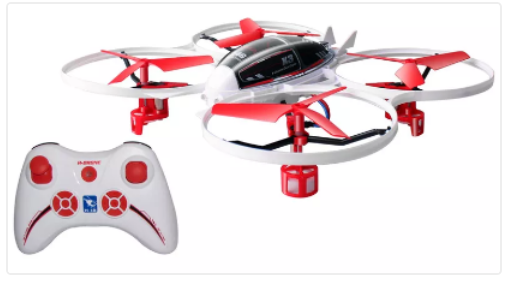
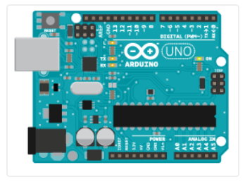
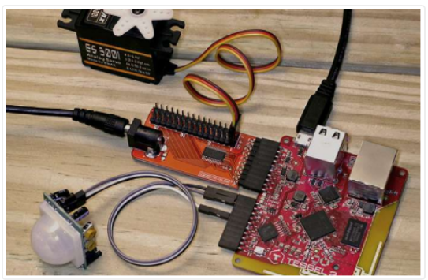
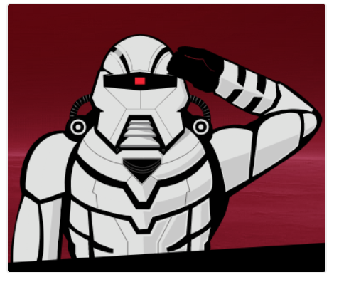

Programação de Hardwares e Internet das Coisas

Com o Node.JS também é possível controlar hardwares. Podemos então usar o JavaScript para trabalhar além das telas dos computadores e celulares, como controlar drones.
Ao programar placas, podemos criar códigos para até mesmo integrar vários objetos, o famoso “Internet das Coisas” (IoT).
Imagine usar JavaScript para controlar as lâmpadas, portas e janelas de sua casa de acordo com a iluminação do ambiente. Ou que quando o GPS do seu smartphone perceber que você está chegando em casa ou no trabalho, ligue a cafeteira para que o café esteja pronto quando você chegar.

Um exemplo é o noduino, um framework para acessar os controles básicos do Arduino a partir de aplicações web usando HTML5, Socket.IO e Node.JS.

Também há o projeto Tessel. No próprio site você pode comprar as placas para montar o seu produto.

Outro famoso projeto é o Cylon.js. Ele é um framework voltado para robótica, computação física e Internet das Coisas.
Você pode ver mais em:
http://sbstjn.github.io/noduino/
https://tessel.io/
https://cylonjs.com/